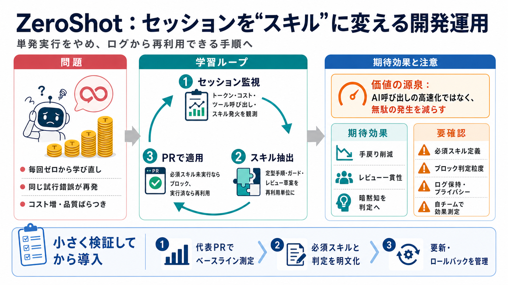

オライリー学習プラットフォーム新刊『実践 AIエージェント開発 ―マルチエージェントシステムの設計と実装』｜ykagata@_heartyfluid
Title: オライリー学習プラットフォーム新刊『実践 AIエージェント開発 ―マルチエージェントシステムの設計と実装』｜ykagata@_heartyfluid # オライリー学習プラットフォーム新刊『実践 AIエージェント開発 ―マルチ…

AIコーディングエージェントの“単発実行”をやめ、実行ログ（セッション）から再利用できる“スキル”へ育て、手戻りとコストを減らす仕組みです。
エージェントは毎回ゼロから学び直しがちで、同じ行き詰まり・同じ試行錯誤が“トークン費用”として積み上がります。
ZeroShotは、セッション監視→スキル抽出→次の実行で適用、という学習ループで“同じ失敗の再発”を抑えます。
“監視（可観測性）”で何が起きたかを集め、“スキル”として再利用し、“PRで強制適用”することで慣習を運用に埋め込みます。
過去の実行履歴を起点に、チームで必要な手順をスキル化し、次のPRで“やるべきこと”を機械的に満たします。
「必須スキルが実行されなかった場合にPRをブロック」し、属人化しがちなレビュー観点を前提条件として固定します。
例えば/bb-reviewのような形でレビュー草案を作り、既存の慣習（チームのコメント）を引用して再利用します。
提示文では「3.7倍速」「トークン90%削減」「レビュー67%削減」などの主張がありますが、対象・期間・比較条件・測定方法が不足しています。
提示文は「コードは一度もあなたのマシンの外に出ません」を示唆し、外部送信を抑える姿勢が読み取れます。
ZeroShotの価値は、単に推論を高速化することではなく、学習資産（スキル）化と運用強制で、無駄の発生自体を減らす点にあります。
効果最大化のために、必須スキル設定・ブロック判定・ログ保持・効果測定条件を先に固めるのが安全です。
ZeroShotは“セッション監視”と“スキル再利用”でコストと手戻りを減らす方向性が魅力です。ただし数値と運用ガードの詳細は不明なので、自チームでの検証が必須です。
Title: オライリー学習プラットフォーム新刊『実践 AIエージェント開発 ―マルチエージェントシステムの設計と実装』｜ykagata@_heartyfluid # オライリー学習プラットフォーム新刊『実践 AIエージェント開発 ―マルチ…
Title: 人工知能の最新技術動向 (CVPR/KDD) (2024年10月15日 開催) - セミナー・研修 | tech-seminar.jp 技術セミナー・研修・出版・書籍・通信教育・eラーニング・講師派遣の テックセミナー ジェー…
Title: 「Deep Learning研究動向の最前線」の関連セミナー・出版物 | tech-seminar.jp 技術セミナー・研修・出版・書籍・通信教育・eラーニング・講師派遣の テックセミナー ジェーピー. ## セミナー. ##…
# 日立、制御工学とAI・ソフトウェア工学を融合し、「Physical AI」の実現に向けた制御ソフトウェアの開発効率化と再利用技術を開発. * 日立、制御工学とAI・ソフトウェア工学を融合し、「Physical AI」の実現に向けた制御ソ…
# AI駆動開発で開発効率を 革新. GitHub Copilot、ChatGPT、Claude等を活用して開発効率を飛躍的に向上させ、品質とスピードを両立した開発体制を構築します。. ## AI開発ツールの活用. ### GitHub C…